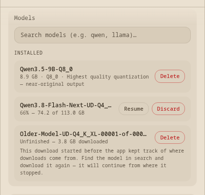
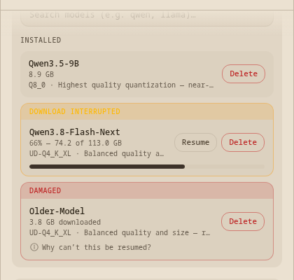
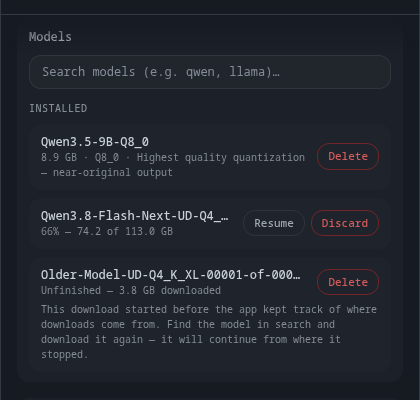
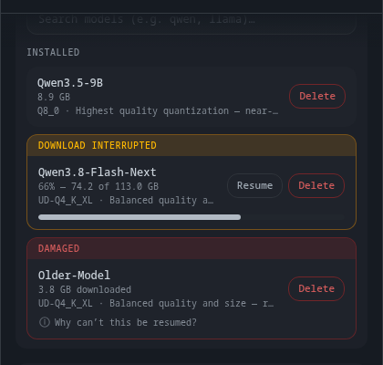
Five of your answers land on this one screen — banner, progress bar, shorter names, quality on its own line, one word for removing.
→ Flip Before/After with space. Confirm it reads the way you pictured it.
I made the DAMAGED banner red rather than yellow — you only specified yellow for "download interrupted".
→ Keep red for damaged (yellow = stopped but fixable, red = stopped and not fixable), or make both yellow.
The quality line is cut off with "…" — the full text ("Balanced quality and size — recommended") wraps to two lines at this width.
→ Keep it clipped to one line with the full text on hover, or let it wrap and accept one extra line on every row.
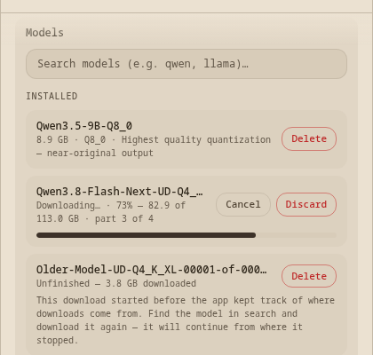
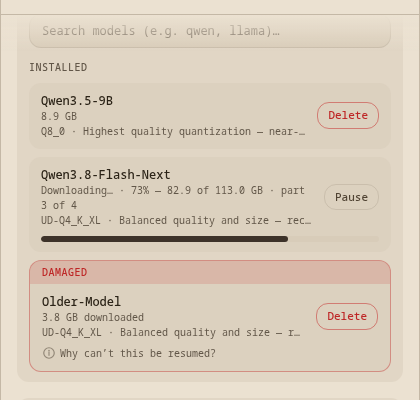
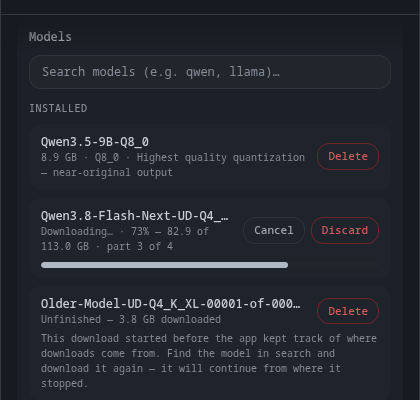
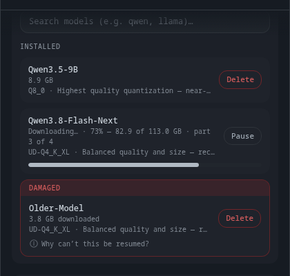
A running download now offers one button, and it says Pause — Delete is gone while bytes are moving.
→ Flip Before/After. Confirm one button is enough.
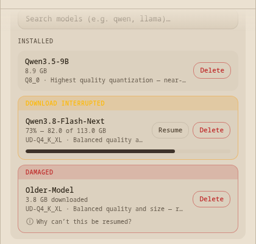
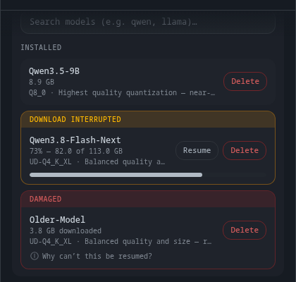
Pressing Pause returns the row to the interrupted state — banner back, Resume and Delete back, bar holding at where it stopped.
→ Confirm this is the round trip you described.
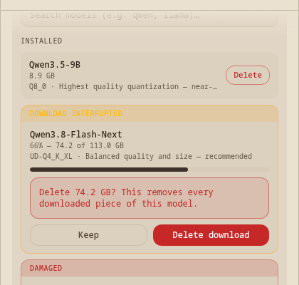
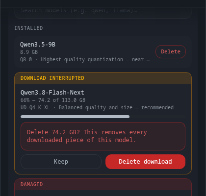
The damaged row's paragraph now lives behind the (i), and the confirmation says Delete instead of Discard.
→ Confirm the (i) wording, and that "Why can't this be resumed?" is the right thing to put next to it.
Your nine answers, built — 6 points to confirm — your answers
Every answer from 2026-08-27 is in. Press space on a step that has Before/After to flip between them. Two of these are choices I had to make on your behalf, marked as such — those are the ones I most need a Yes or No on.
| Item | # | Point | Answer | Note |
|---|
Also done, no decision needed
- C9 (the GB mismatch) — numbers left exactly as they are, and the app-wide question is now a ROADMAP item with the three options written out. Nothing in this feature changed.
- Six screens re-shot in all six themes after the changes.
Two things you should know
- I found a real defect in our own tooling while doing this:
workbench-boot-check.mjsprints "All 12 routes mount cleanly" even when nothing is running on the port it checks. It's on the ROADMAP — it means a green boot check has been weaker evidence than we thought. - The machine was heavily loaded tonight (load average peaked near 28 with three other sessions' dev servers up), which made the screenshot rig hang once and the boot check fail different routes on every run. Nothing to do with this code — but it's why this took a while.
What happens next
Once you confirm these, I build the machinery underneath: the record written beside each download, the honest list, the disk-space fix, and Resume actually resuming. That's tasks 3 through 10 of the plan, and it's all backend from here.